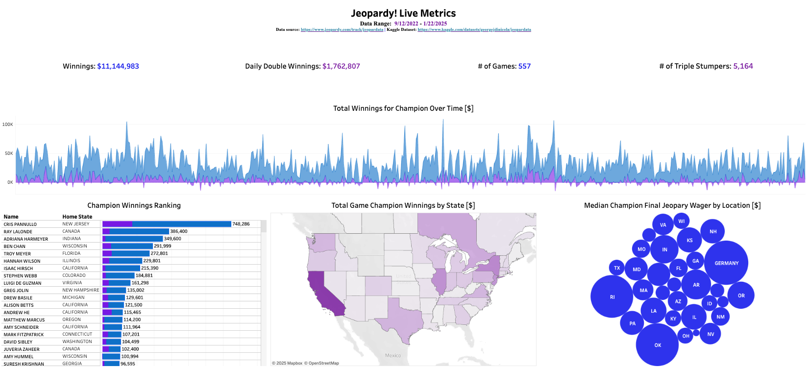
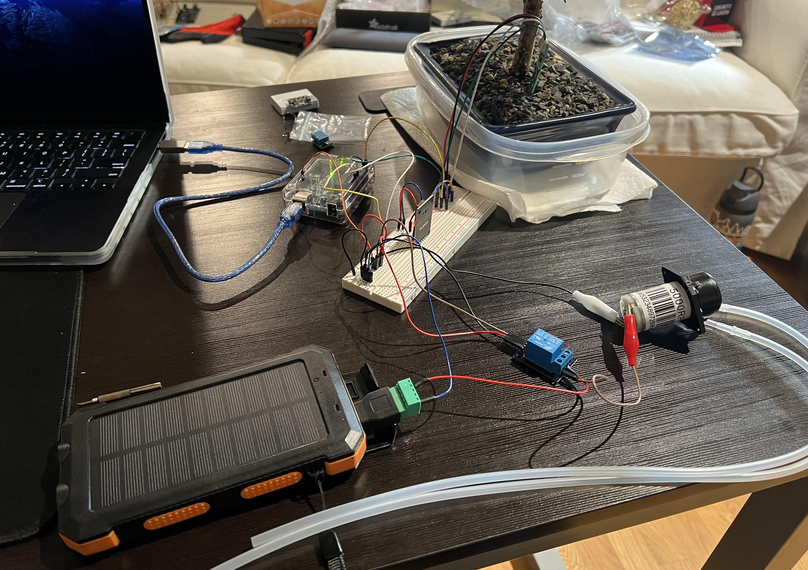

A versatile engineer and analyst with experience in backend software engineering, DevOps, systems engineering, database development, data science, business intelligence, and machine learning

A software system that systematically scrapes, transforms, stores, and publishes Jeopardy gameplay data to Kaggle
View Kaggle DatasetA Tableau data visualization providing live gameplay trends and statistics
View DashboardAn automated machine learning model for predicting if the current champion will win the next game
View Prediction History

A proof of concept implementation of a device that automatically waters a plant based on soil moisture readings & rotate the plant in the sun as needed based on lux sensors. Created with hardware components and Arduino C code
View Project